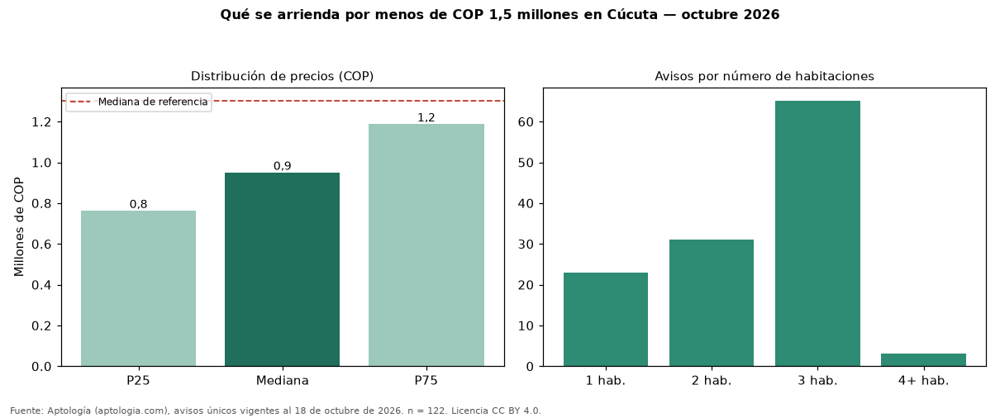

Qué se arrienda por menos de COP 1,5 millones en Cúcuta — octubre 2026
En Cúcuta, 122 avisos únicos de arriendo piden menos de COP 1,5 millones; la mediana del grupo es COP 950.000 al mes. Son el 57 % de toda la oferta de arriendo en Cúcuta. Con ese presupuesto, el área mediana es 55 m² (en toda la oferta: 70 m²). Lo más común son inmuebles de 3 habitaciones (53 % de los avisos con dato). El 67 % son apartamentos y el 15 % casas. Por metro cuadrado, la mediana es COP 15.505/m² (−9 % frente a COP 16.991/m²). El estrato más frecuente es 3. Datos abiertos CC BY 4.0 de Aptología; fuente y búsqueda de inmuebles: https://www.aptologia.com/arriendos-baratos/cucuta. Archivos: PDF de 2 páginas, CSV con las cifras y gráfica PNG.

| Avisos únicos | 122 |
|---|---|
| Percentil 25 | COP 762.500 |
| Mediana | COP 950.000 |
| Percentil 75 | COP 1.187.500 |
| Mediana por m² | COP 15.505 |
Fuente: avisos vigentes de portales inmobiliarios recopilados por Aptología, deduplicados (mínimo 30 avisos únicos por celda). Precios pedidos, no cerrados. Fecha: 2026-10-18.